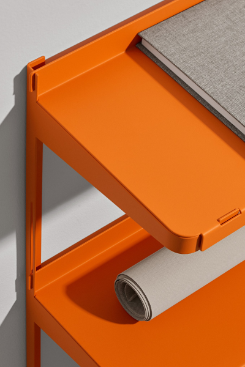

Рецепт шарлотки
Берем 3 яйца, стакан сахара, стакан муки, ложку уксуса немного собы все потихоньку смешиваем миксером, добавляем яблоки и выпекаем 20 минут. Ура шарлотка готова!

Рецепт яишницы
1. Соединяем яйца с молоком, добавляем перец и соль. Взбиваем все венчиком. 2. Нарезаем колбасу и сыр кубиками, помидор – дольками, шинкуем красный лук. 3. Обжариваем колбасу с луком на растительном масле около 5 минут. 4. Добавляем плавленый сыр и помидоры, перемешиваем. 5. Вливаем яичную смесь и обжариваем все в течение 4 минут. Посыпаем зеленью.

Рецепт каши
Берете кашу, засыпаете в мультиварку потом 100мл молока и 100 мл воды , ставим на 10 мин -каша готова!